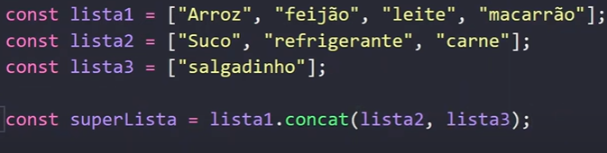
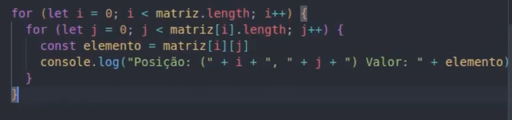
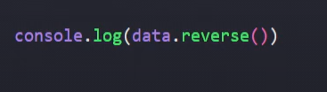

Array
Comandos simples
Um Array, Vetor ou variável composta é uma variável que tem vários elementos, cada elemento é composto por seu valor e por uma chave de identificação.
Obs: Lmebrando que os indices começam em 0 e não em 1.
Para criar um arrya basta declarar uma variável normalmente e colocar os valores dentro de colchetes.
var num = [4, 5, 8, 9, 54, 78]
Alguns exemplos, de como trabalhar com um array usando como exemplo a variável num.
Todos os comando podem ser feitos também com matrizes, que é o mesmo que arrays multidimencionais, para isso basta dizer em qual nível da matriz aplicaria o comando, por exemplo, um push ficaria assim:
num[0].push
- num.push(34) - Com esse comando o JavaScript entende e já coloca o valor declarado para a última posição do array.
- num.unshift( ) - Usamos esse comando para adicionar um valor na posição 0 do array.
- num[6] = 18 - Para adicionar ou alterar um valor, primeiro declara a posição que será inserido e depois o valor, que nesse caso ficaria: num = [4, 5, 8, 9, 54, 78, 18]
- num.pop( ) - Deleta o último valor do array.
- num.shift( ) - Deleta o primeiro valor do array.
-
num.splice(2, 1, 'Carlos') - Usamos esse comando para excluir ou substituir mais de um elemento, indicando primeiro a posição desejada, depois quantos elementos serão excluidos e por fim, o novo valor a ser adicionado no array. Nesse exemplo ele iria pegar o elemento na posição 2, exclui-lo e substituir pelo valor 'Carlos'
O valor é substituido não somente no comando recente mas na raiz do array. - num.includes('Olá') - Faz uma busca no array em qual posição está o valor, e devolve true or false.
- num.indexOf(54) - Com esse comando o JavaScript vai buscar no array em qual posição está o valor 54, e vai me retornar a posição em que ele se encontra, se por acaso o valor que não está no array ele vai me retornar a posição -1.
-
num.slice(0, 3,) - Esse comando faz um corte no array, criando assim um novo array, é como se eu falasse... A partir da posição 0, pegue 3 itens, e você pode salvar em um array.

Nesse caso, o novo Array pegaria alguns elementos usando o comando slice, o primeiro parametro indica a posição inicial que será acrescentado, o segundo parametro indica a posição final a ser adicionado. lembrando que o último parametro não é adicionado a posição indicada mas sim uma antes.
-
num.slice(-3,) - Esse comando faz um corte no array, como eu coloquei um parametro negativo, ele vai pegar o último elemento que é -1, e contar, o penúltimo será -2, até chegar no elemento desejado, e como não passsei o segundo parametro entende-se que ele vai cortar do elemento selecionado até o último.
Exemplo:
Neste exemplo estamos incrementando a função da tecla Backspace, aqui cortamos desde o item 0 do array, ou seja, o primeiro item até o -1 que é o último, com a diferença que o último item é excluído, então pegamos o primeiro item até o penúltimo.
-
num.concat(outroArray, "José") - Esse comando faz a junção entre arrays, nesse exemplo, ele vai pegar o array num, depois vai concatenar com outro array e por último mas não obrigatório, ele vai concatenar o valor José no array. ex:
 - num.length - Com esse comando você consegue verificar quantos valores tem o seu array.
- num.length -1 - Com esse comando o JavaScript retorna o último valor do seu array.
- num.sort( ) - Com esse comando o JavaScript vai organizar os valores do array em ordem alfabética.
- num.reverse( ) - Com esse comando o JavaScript vai organizar os valores do array em ordem reversa de alfabética.
- num.sort(function (a, b){return a - b}) - Com esse comando o JavaScript vai organizar os valores numericos do array em ordem crescente, para fazer de forma decrescente basta alterar o parametro para b -a.
- num.join('o que quiser') - Com esse comando o vai adicoinar entre os separadores o texto dentro das aspas.
Inserir
Alterar
Remover
Pesquisar
Cortar
Concatenar
Outros Comandos
Estrutura For com array
Estrutura For comum usada para imprimir todos os valores e suas posições.

Agora vamos ver uma versão do for específica para arrays e objetos, que é mais simplificada.
Para entendimentos, podemos ler da seguinte forma: Para cada posição, dentro da minha variável faça...

Outro exemplo de estrutura for com array
Interando uma matriz com for
Para verificar cada elemento dentro de uma matriz vamos usar a seguinte estrutura for, tendo um for dentro do outro um para os arrays e outro para os itens, sendo representado pelas letras i e j
Métodos em Arrays
São modo de interação com os arrays, objetos e high-order. Pedem como parâmetros um value, indice e o própeio array, é muito comum utilizar somente o value.
forEach
Nesse exemplo, a função exibirElemento irá mostrar os elementos de um array que é nossa lista, o for chama a função exibirElemento, e passa como parâmetro cada elemento que é o lista[i], depois passa o índice e por último o array como todo.
Todo esse código acima pode ser substituído por uma simples expressão como:

Resumindo, ele faz exatamente como o próprio nome da função diz, para cada elemento ... e depois chama a função desejada.
map
É utilizado para fazer uma transformação em um array, mapeando cada elemento de um array antigo para um novo, é como se ele copiasse um array para um novo array.
Primeiro vou colocar o código passo a passo, para depois mostrar o modo simplificado.

Agora vamos ver o modo map para simplificar todo esse código. O return é como se tivesse fazendo um push para o array, como no exemplo acima.
Filter
Utilizado para filtrar elementos de um array, seleciona elementos específicos e cria um novo array, vou colocar um exmeplo de código com a mesma função, porém sem usar o comando filter.

Agora vamos ver o comando simples que é utlizando o filter, e obteremos o mesmo resultado, só usamor o value como parâmetro, a condição utilizada no return é a condição utilizada para fazer a filtragem.
Find
Parecido com o filter, ele vai percorrer o meu array por completo, a diferença é que o primiero resultado que ele achar ele irá retornar, então fique ciente de que só averá um único resultado.
Para usar o find, utiliza a seguinte estrutura:
FindIndex
Utilizado para procurar o número de um elemento específico e a partir daí poder modificar ou tulizar para qualquer outro fim.
Nesse exemplo, ele vai percorrer todo o array até encontrar a propriedade que o valor é Bauer e vai retornar o número do índice que está esse valor.
Reduce
Utilizado para transformar um array em um outro elemento, seja um array ou um objeto, um número, uma string, qualquer coisa. Ele é diferentedos outros, ele acumula valores, vai acumulando valor do elemento anterior. Ele possui 4 parâmetros e não 3 como antes, o primeiro que le recebe é o valor da interação antertior, e os outros como das outros métodos. O return nesse caso vai passar o valor para a próxima interação, assim conseguimos a cada interação somar o valor da interação anterior acumulado com o elemento atual.
Nesse exemplo, o número 0 é o segundo parâmetro exigido pelo reduce, que é o mesmo que o valor inicial.

Pode-se também com reduce reorganizar dados para uma melhor organização do código, vou colocar um exmeplo abaixo de como utilizar o reduce para organizar melhor os dados.

Nesse exemplo, tinhamos um array com vários objetos, e usamos o reduce para separar por raça. O segundo parâmetro foi um objeto vazio, vou me esforçar para ler esse código de maneira clara.
Cria o método reduce, passa uma função anônima que verifica se o a raça do personagem for verdade, ele vai dar um push no personagem e armazenar, se for falso, ou seja, de outra raça, ele vai criar um novo array para cada raça e vai separar e armazenar.
Sort
Utilizadopara ordenar arrays em ordem alfabética e numerica. O sort ele altera o array original, então é bom lembrar desse detalhe.
Como se utilizar o sort:
Vamos utilizar uma função de callback e passar dois parâmetros, que podem ser a e b, por que o sort vai fazer uma comparação entre dois elementos qual deles ele vai precisar colocar na frente, depois disso ele vai comparar o último elemento comparado com o próximo e assim até finalizar o array.
O return se comporta diferente, ele tem que devolver um número negativo e outro positivo, para fazer a comparação. Em um cenário onde quero que seja ordenado numericamente, posso passar a - b, assim ele vai calcular, se der o resultado negativo ele sabe que precisa colocar o a começo do array e se for positivo o b para o final. Para fazer de forma decrescente basta colocar o return b - a.
Uma dica para que o array não seja modificado e se mantenha original, é usar o slice sem nenhum parâmetro, assim ele vai criar uma cópia do array de todos os elementos e ai vamos passar a cópia e não mais o array original, com isso conseguimos armazenar em um novo array, como na imagem abaixo.
Includes
Utilizado para percorrer um array e retornar true caso o item procurado exista no array e false caso não exista, muito útil para fazer pesquisas rápidas.
Nesse exemplo, pode-se ler da seguinte maneira, no array latinhas, existe um item chamado colecao-especial, a partir da posição 2?
Exemplo real
Neste exemplo queremos limitar as teclas que o usuário pode apertar. Podemos ler o if da seguinte maneira... Se a tecla que o usuário presionar estiver incluida no array acima, pegue o valor do input e concatena com a tecla pressionada e retorna esse valor.
Split
Utilizado para dividir uma string transformando ela em um array, a partir de um caracter específico da string, nesse caso o ponto, então sempre que esse caracter acontecer, seria como se ele quebrasse a string em um diferente ponto do array, como mostra o exemplo no comentário do código.
Reverse
Utilizado para reverter a ordem do array, muito utilizado em filtros para colocar na ordem de z - a ou maior para menor.
Some
Some que significa algum é utilizado para encontrar algum valor dentro do array, ele vai percorrer o array e retornar um valor booleano como treu ou false de acordo com a condição a ser passada, ele não vai retornar o item, o índice ou objeto.
Lê se da seguinte forma: Percorra o array até encontrar algum elemento que tenha a propriedade active como false, se houver me retorne o valor true, se não false.
Every
O método every precisa que todos os elementos satisfaçam a condição desejada, então se nem todos os elementos atingiram aquela condição irá retornar false, se todos atingirem retornará true.
Desestruturando Arrays e Objetos
Podemos desestruturar objetos e arrays e criar novos objetos ou arrays a partir disso.
Array
Para desestruturar um array, basta colocar os colchetes e nomear o novo array antes do sinal de igual, e depois do sinal de igual colocar o nome do array desejado, como no exemplo.
Neste exemplo vamos nomear o item 0 do array parents de father e o tiem 1 do array parents de mother, como o array somente possui valores, temos que nomear quando formos desestruturar.
Objeto
Para desestruturar um objeto, basta colocar as chaves e os nomes das propriedades que deseja desestruturar antes do sinal de igual, e depois do sinal de igual colocar o nome do objeto desejado, como no exemplo.
Neste exemplo, vamos desestruturar a propriedade job e parents do objeto person, lembrando que parents é um array dentro do objeto.
Desestruturando o mesmo objeto do exempo de cima, mas em uma situação que teriamos que usar uma função.